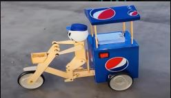
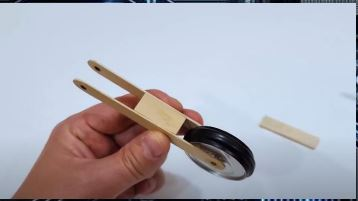
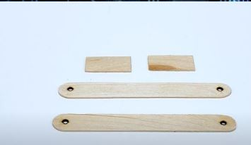

Repartidor de Pepsi es un robot que utiliza energia electrica por medio de baterias que permite que el robot se mueva de forma uniforme utilizando la energia de las baterias y la expresa con un motor el cual es el que le da el movimiento circular uniforme a las llantas con las que se mueve el robot. El diseño de este robot es bastante sencillo pero a la vez es interesante y bonito por lo que llama la atencion de los mas jovenes.

ENERGIA ELECTRICA
La energía eléctrica es la forma de energía que resulta de la existencia de una diferencia de potencial entre dos puntos,
lo que permite establecer una corriente eléctrica entre ambos cuando se los pone en contacto por medio de un
conductor eléctrico. La energía eléctrica puede transformarse en muchas otras formas de energía, tales como la energía
lumínica o luz
Como el movimiento de cargas eléctricas negativas, o electrones, a través de un cable conductor metálico como
consecuencia de la diferencia de potencial que un generador esté aplicando en sus extremos.
Líneas de transmisión de energía eléctrica.
PRIMERA LEY DE NEWTON
"Todo cuerpo preserva su estado de reposo o movimiento uniforme y rectilíneo a no ser que sea obligado a cambiar su estado por fuerzas impresas sobre él".
Por ejemplo, una rana -sentada sobre una hoja- se mantendrá en reposo mientras no actúe una fuerza sobre ella. En nuestro caso, el resultado (impacto) sanitario será el mismo con el transcurrir del tiempo, mientras no exista un problema o intervención sanitaria (fuerza) que actúe sobre ellos. Adicionalmente, se señala que los cuerpos en movimiento (a una velocidad determinada) están sometidos constantemente a fuerzas de roce o fricción, que los frena de forma progresiva hasta su detención. En nuestro caso, estas fuerzas de roce o fricción, son los nudos críticos durante la implementación de las intervenciones sanitarias o las acciones de mitigación para reducir la vulnerabilidad del sistema de salud frente al problema.
MOVIMIENTO CIRCULAR UNIFORME
En física, el movimiento circular uniforme es el que describe un cuerpo que se mueve alrededor de un eje de giro con un radio y una velocidad angular constantes, trazando una circunferencia y con una aceleración centrípeta.
MATERIALES
3 latas de Pepsi,
12 paletas,
1 bolita de duroport,
3 pinchos,
Un motor,
4 engranajes,
4 cables,
3 barritas de silicón,
3 super blue,
Una cinta de aislar,
Un swich,
1 broche para batería cuadrada,